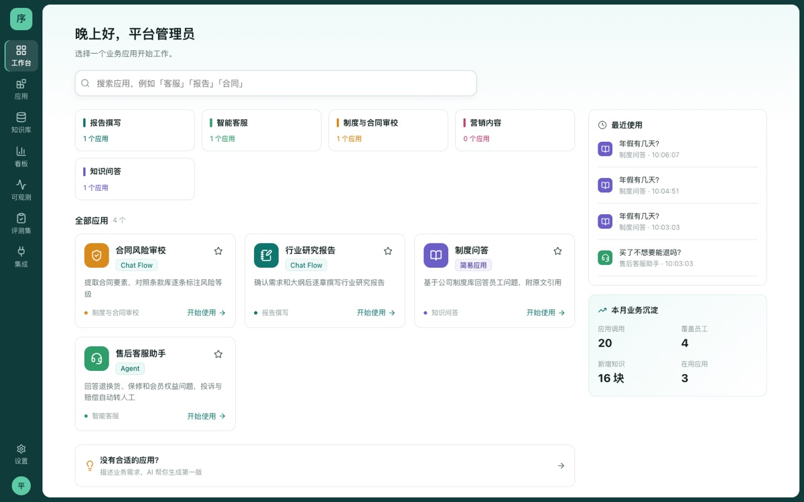
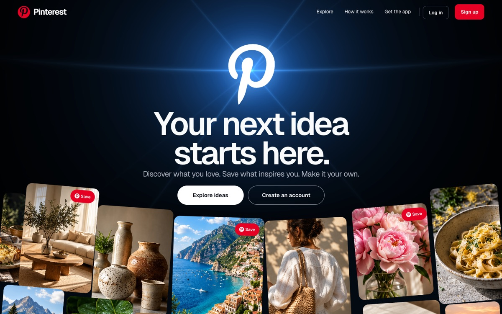
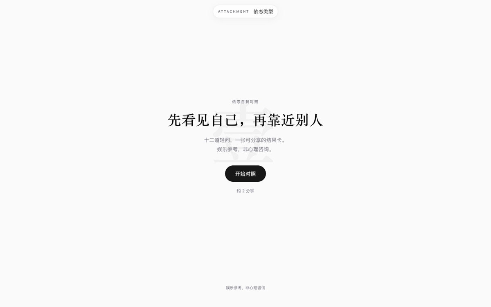

Deepseek SuperAgent超在哪了？
它没超在模型上，超在把「人肉调度员」这份活从人身上接走了
阅读原文你好，我是
AI 产品经理 · ENFP · 动手派
把复杂的技术，变成简单的体验。
关心技术能做什么，更关心它能为人做什么。我习惯先回到具体的人和场景，问清楚“这件事真的需要 AI 吗”，再自己动手把 PRD 做成能跑的产品，用真实的使用结果决定下一步。
谁遇到了什么困难？今天怎么解决？这件事真的需要 AI 吗？
不停在 PRD 上，把想法做成能跑、能用、能给人试的产品。
用评测集、真实案例和使用反馈，判断下一步改什么。
从真实问题出发，做能用的产品。

FastAPILangChainReactpgvectorCelery
基于 chusimin/zhishu-rag-platform 经授权二次开发
FastAPISSE 流式输出ffmpegDeepSeekqwen-vl


我能把哪些事做好。
让 AI 基于你的资料回答：文档解析、切块、检索、排序，回答带出处。
让 AI 分工协作完成任务：多 Agent 的诊断—辩论—评审链路，Skill 编写与部署。
设计评测集，把线上问题变成新用例，记录每一次运行，核算调用成本。
需求定义、PRD 与降级策略、竞品与 AI 产品拆解、体验打磨。
LangChainJavaScriptReactOpenAI 兼容接口DeepSeek通义 qwen-vl
公众号「小渡ovo」· 共 6 篇
它没超在模型上，超在把「人肉调度员」这份活从人身上接走了
阅读原文不会写代码，也该看懂 GitHub：一个项目页面怎么看、八个必要功能是干什么的
入门指南2026-11-03 03Spec 火起来，是因为需求文档多了一个只会照做的读者
产品方法2026-11-02 04FDE 火了，但这可能不是 AI 行业的好消息
AI 行业2026-10-29 05从传统 PRD 到 AI PRD，产品文档正在发生什么变化
产品方法2026-10-26 06DeepSeek 宣布开源 DeepInfer，开源之后真正的壁垒在哪
AI 热点2026-10-23欢迎聊 AI 产品、Agent 应用、内容创作，或者任何一个有趣的想法。